The sentence
The sentence, for reference.
hp0_the_sentence.flac, 2.5 s, mono
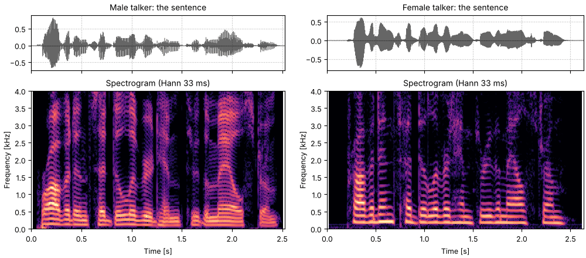
Code
fig, playhead = show(sentence, "the sentence")
sound = sentenceThe Cepstral analysis page takes a voice apart into a pitch track and a
spectral envelope. This page goes the other way. so.harmonic_complex accepts an F0 contour
as well as a fixed F0: every harmonic follows n times the contour, with phase
and the amplitudes a_n may be a function of time and frequency, a spectral envelope evaluated at every harmonic. A pitch track and an envelope are then enough to make a voice, and either one can be changed without touching the other, which is the idea behind vocoders such as WORLD (Morise et al., 2016).
so.f0_track, and Harvest.Press play and a line follows the sound across every time axis in its plots. Click any time axis to play from that point. The audio is lossless, since compression would alter the binaural sounds. Start with your volume low.
The sentence is the one from Seeing speech. Its pitch is measured three ways, as
on the Cepstral analysis page: the cepstral peak in each 40 ms time window, every
5 ms (Noll, 1967); so.f0_track, which chooses a path through YIN-style candidates
(de Cheveigné & Kawahara, 2002); and WORLD's Harvest (Morise, 2017), stored with the sentence.
Unless stated, the syntheses below follow so.f0_track.
import matplotlib.pyplot as plt
import numpy as np
from scipy.interpolate import RegularGridInterpolator
import sonore as so
plt.rcParams.update({"font.size": 9, "axes.titlesize": 10, "figure.dpi": 100})
def finish(snd):
"""How every sound in the gallery is played: 5 ms ramps, RMS 0.1, peak at most 0.95."""
snd = snd.ramp(5e-3).normalize(rms=0.1)
return snd.normalize(peak=0.95) if snd.peak > 0.95 else snd
# The sentence at its native 16 kHz, and its F0 track (WORLD Harvest, 0 where unvoiced).
# Sources: docs/speech/SOURCES.md.
sentence = finish(so.load("docs/speech/bdl_arctic_a0131.flac"))
fs, duration = sentence.fs, sentence.duration
f0_times, f0_harvest = np.loadtxt("docs/speech/bdl_arctic_a0131_f0.csv", delimiter=",", skiprows=2).T
stft = so.STFT(sentence, win_dur=0.040, hop_dur=0.005)
cep = so.Cepstrum(stft)
t_cep, f0_cep, _ = cep.f0(f_lo=75, f_hi=400)
track = so.f0_track(sentence)
# Three contours, each a (times, values) pair with 0 where unvoiced; an F0Track also works as is.
contours = {
"cepstral": (t_cep, f0_cep[0]),
"so.f0_track": (track.t, track.f0[0]),
"Harvest": (f0_times, f0_harvest),
}
FMAX = 4000
def show(snd, title, contour=None):
"""Waveform and narrowband spectrogram (Hann 33 ms, harmonics resolved), on one time axis."""
fig = plt.figure(figsize=(10, 4.2), layout="constrained")
ax0, ax1 = fig.subplots(2, 1, sharex=True, height_ratios=[0.45, 1])
snd.plot(ax0, color="k", lw=0.4)
ax0.set(title=f"Waveform: {title}", xlabel="")
so.STFT(snd, win_dur=0.0333, hop_dur=0.002).plot(ax1, db_range=60, colorbar=False, fmax=FMAX)
ax1.set_title("Spectrogram (Hann 33 ms)")
if contour is not None:
t, f = contour
ax1.plot(t, np.where(f > 0, f, np.nan), color="c", lw=1.2)
for ax in (ax0, ax1):
ax.set_xlim(0, duration)
return fig, [ax0, ax1]The quickest way to hear a pitch track is to play it. A band-limited sawtooth that follows each track, silent where the track says unvoiced, keeps the intonation and nothing else. Errors that are small on a plot are easy to hear: an octave slip is a sudden jump, and a time window wrongly called voiced or unvoiced is a click or a hole.
The sentence, for reference.
hp0_the_sentence.flac, 2.5 s, mono

fig, playhead = show(sentence, "the sentence")
sound = sentenceA sawtooth on the cepstral F0. Each time window is judged on its own, so the buzz flickers on and off where the cepstral peak hovers around its threshold, and jumps where a time window picks the wrong peak.
hp1_a_sawtooth_on_the_cepstral_f0.flac, 2.5 s, mono
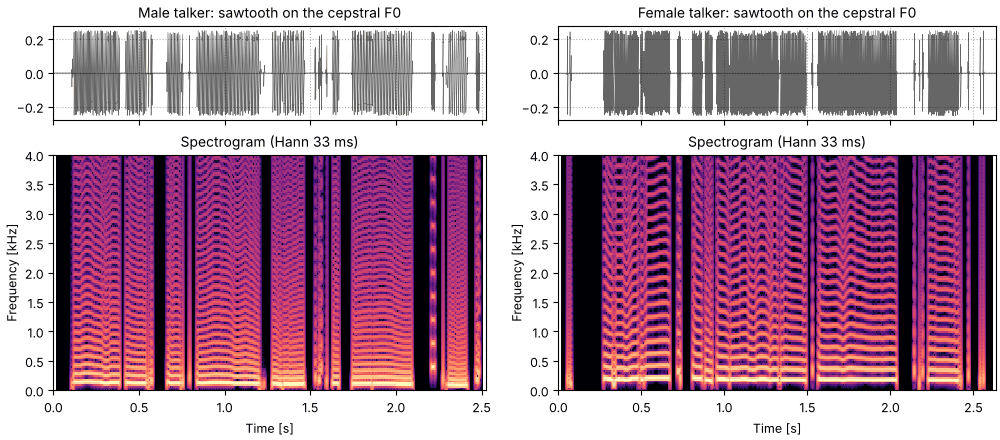
buzz = finish(so.sawtooth_wave(duration, fs, contours["cepstral"]))
fig, playhead = show(buzz, "sawtooth on the cepstral F0", contours["cepstral"])
sound = buzzA sawtooth on so.f0_track. The path is continuous, and voicing switches only where the
waveform stops repeating well, so the buzz comes in syllables.
hp2_a_sawtooth_on_so.f0_track.flac, 2.5 s, mono
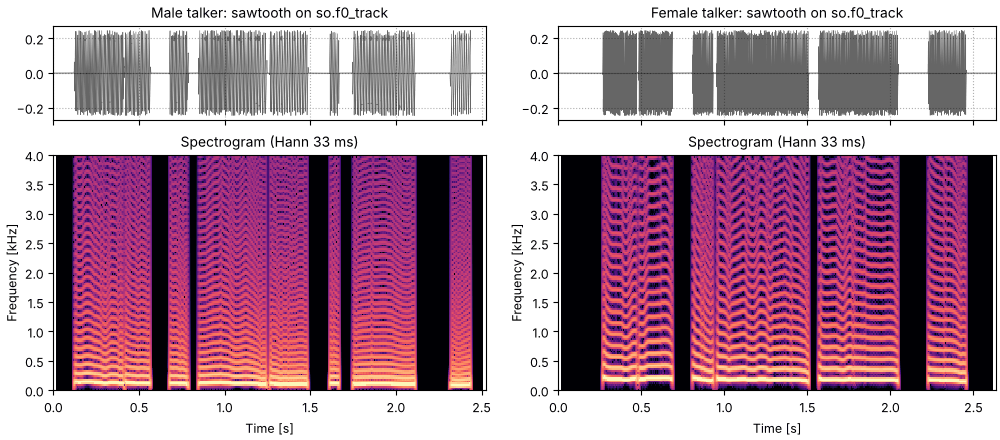
buzz = finish(so.sawtooth_wave(duration, fs, track))
fig, playhead = show(buzz, "sawtooth on so.f0_track", contours["so.f0_track"])
sound = buzzA sawtooth on Harvest's track. Harvest voices more of the sentence, so the buzz runs on
through some of the consonants that so.f0_track leaves silent.
hp3_a_sawtooth_on_harvest.flac, 2.5 s, mono
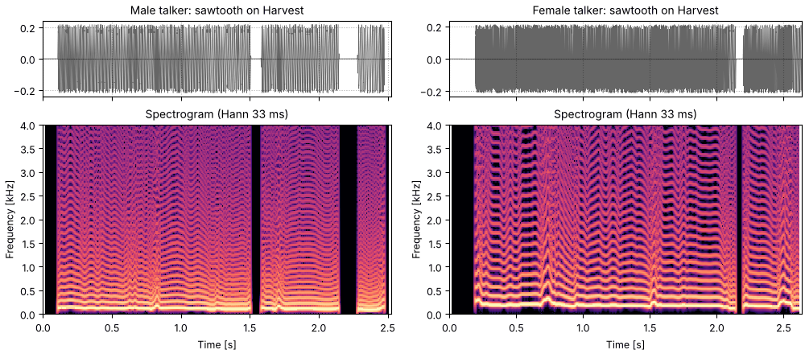
buzz = finish(so.sawtooth_wave(duration, fs, contours["Harvest"]))
fig, playhead = show(buzz, "sawtooth on Harvest", contours["Harvest"])
sound = buzzfor name, (_, f) in contours.items():
print(f"{name:12s} voiced on {np.mean(f > 0):.0%} of its time windows")cepstral voiced on 64% of its time windows so.f0_track voiced on 68% of its time windows Harvest voiced on 85% of its time windows
The buzz has the right pitch and the wrong timbre: every vowel sounds the same. The timbre is in
the spectral envelope, and the cepstrum separates it from the harmonics. Lifter each time window below
half its pitch period, as on the Cepstral analysis page, and evaluate that
envelope at every harmonic's frequency at every instant. Passed to so.harmonic_complex as the
amplitudes, it gives harmonics that follow the track, with heights that follow the formants.
voiced_t, voiced_f0 = track.t[track.voiced[0]], track.f0[0][track.voiced[0]]
cutoffs = 0.5 / np.exp(np.interp(cep.t, voiced_t, np.log(voiced_f0))) # half a period, per time window
envelope = cep.lifter(cutoffs).envelope()[0] # (frequencies, time windows)
log_envelope = RegularGridInterpolator(
(cep.t, stft.f), np.log(envelope.T), bounds_error=False, fill_value=None
)
def formants(t, f):
"""The envelope's gain at times t and frequencies f, interpolated in dB between time windows and bins."""
return np.exp(log_envelope(np.stack([t, f], axis=-1)))Harmonics on so.f0_track with the cepstral envelope as their amplitudes, silent where
unvoiced. The words come back, in the talker's intonation, though only the voiced sounds are
there; the consonants that are noise are missing until the next section.
he1_harmonics_shaped_by_the_envelope.flac, 2.5 s, mono
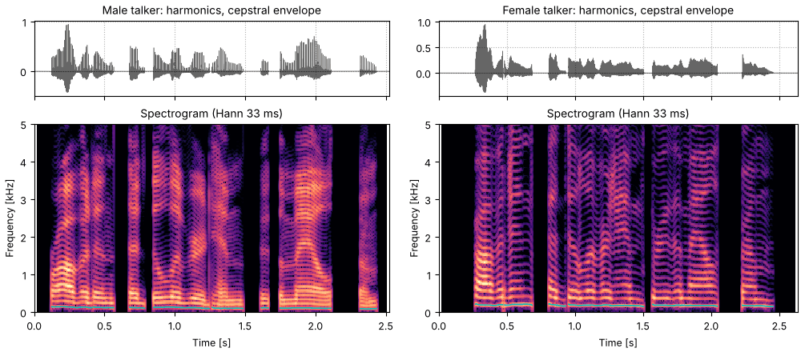
shaped = finish(so.harmonic_complex(duration, fs, track, amplitudes=formants))
fig, playhead = show(shaped, "harmonics on so.f0_track, cepstral envelope", contours["so.f0_track"])
sound = shapedA channel vocoder does the same job with band envelopes instead of a cepstral one (see
Hearing through a vocoder). Given a harmonic carrier on the pitch track rather
than noise, it puts the pitch back too. The carrier below is so.harmonic_complex with
unvoiced="noise", which fills the unvoiced stretches with white noise of the harmonics' power,
so the consonants have something to modulate.
The sentence through a 16-band noise vocoder (Shannon et al., 1995): the envelopes are there, the pitch is not, and it sounds whispered.
he2_sixteen_noise_bands.flac, 2.5 s, mono
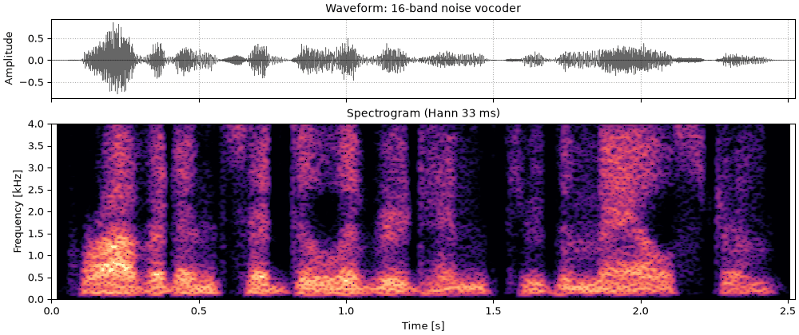
vocoded = finish(so.noise_vocode(sentence, 16, 80, 7600, rng=1))
fig, playhead = show(vocoded, "16-band noise vocoder")
sound = vocodedThe same 16 bands on a harmonic carrier that follows so.f0_track. The voice and its
intonation return, with the voiced and unvoiced sounds each on their own kind of carrier. The
harmonics within a band share one envelope, so the formants are blurrier than with the cepstral
envelope above.
he3_sixteen_bands_on_harmonics.flac, 2.5 s, mono
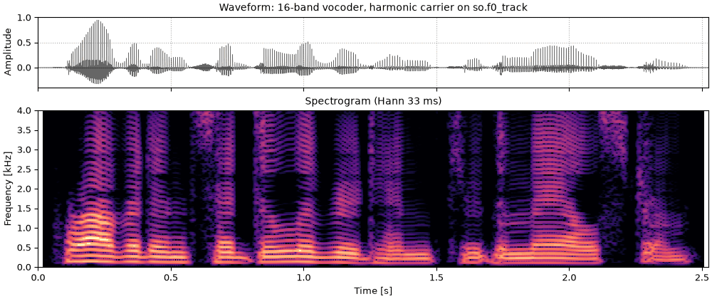
carrier = so.harmonic_complex(duration, fs, track, unvoiced="noise", rng=1)
vocoded = finish(so.noise_vocode(sentence, 16, 80, 7600, carrier=carrier))
fig, playhead = show(vocoded, "16-band vocoder, harmonic carrier on so.f0_track", contours["so.f0_track"])
sound = vocodedWhere the track says unvoiced, the sound is noise: fricatives, bursts and breath. Noise shaped by the same envelope fills the gaps: white noise whose STFT magnitude is replaced, at every time window, by the envelope. It is faded in where the track's voicing turns off, and set as loud, relative to the harmonics, as the unvoiced parts of the sentence are relative to its voiced parts.
noise = so.gaussian_noise(duration, fs, rng=2)
coloured = so.STFT(noise, win_dur=0.040, hop_dur=0.005)
coloured.data = envelope[None] * np.exp(1j * np.angle(coloured.data))
breath = coloured.to_sound().data[: len(sentence), 0]
# Voicing between time windows, 1 where voiced; the harmonics are switched at the same time windows.
t_samples = np.arange(len(sentence)) / fs
voicing = np.interp(t_samples, track.t, track.voiced[0].astype(float))
def rms(x):
return np.sqrt(np.mean(x**2))
# How loud the unvoiced stretches of the sentence are, relative to the voiced ones.
x = sentence.data[:, 0]
balance = rms((1 - voicing) * x) / rms(voicing * x)
print(f"unvoiced stretches: {20 * np.log10(balance):.1f} dB relative to the voiced ones")
def with_breath(voice, noise=breath):
"""The voiced sound, plus envelope-shaped noise where unvoiced, at the sentence's own balance."""
gap = (1 - voicing) * noise
return so.Sound(voice.data[:, 0] + gap * balance * rms(voice.data[:, 0]) / rms(gap), fs)unvoiced stretches: -14.1 dB relative to the voiced ones
The harmonics shaped by the envelope again, with silence where unvoiced.
hu1_silence_in_the_gaps.flac, 2.5 s, mono
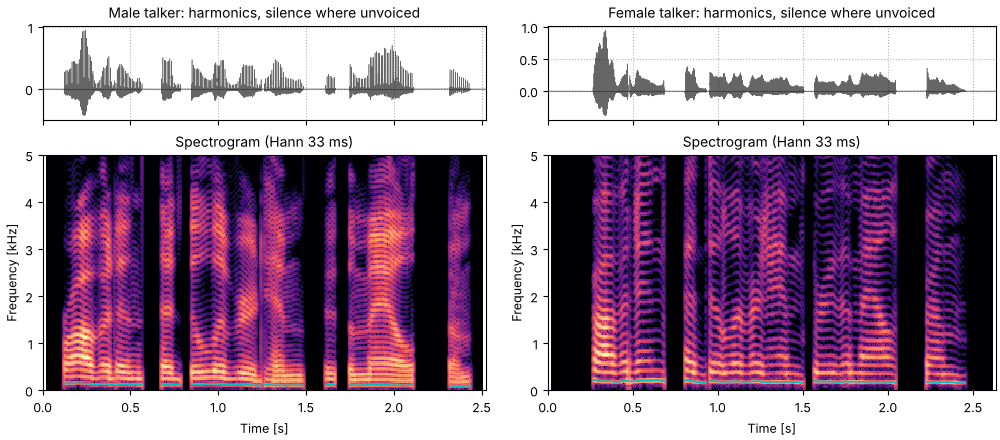
voice = so.harmonic_complex(duration, fs, track, amplitudes=formants)
fig, playhead = show(finish(voice), "harmonics only, silence where unvoiced", contours["so.f0_track"])
sound = finish(voice)The same harmonics with envelope-shaped noise in the gaps. The s, t and h sounds come back, and the sentence is a complete, if buzzy, resynthesis from two things: a pitch track and a spectral envelope every 5 ms.
hu2_shaped_noise_in_the_gaps.flac, 2.5 s, mono
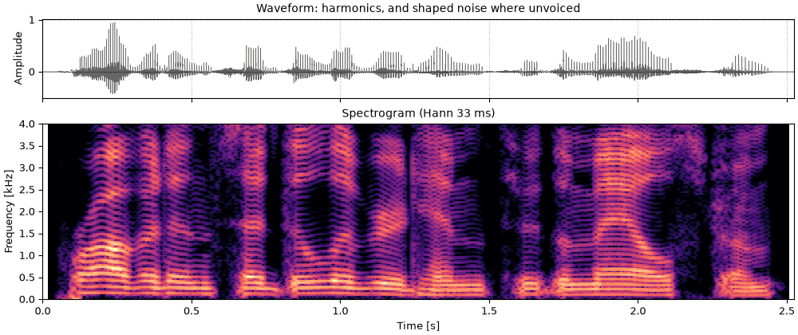
resynthesis = finish(with_breath(voice))
fig, playhead = show(resynthesis, "harmonics, and shaped noise where unvoiced", contours["so.f0_track"])
sound = resynthesisSince the envelope is evaluated at whatever frequency each harmonic has, the pitch can change while the formants stay where they were. Each sound below keeps the envelope and the noise of the last one, and changes only the contour.
voiced = track.voiced[0]
median = np.median(track.f0[0][voiced])
print(f"median voiced F0: {median:.0f} Hz")
def on(values):
"""The resynthesis on another contour, at so.f0_track's window times."""
contour = (track.t, np.where(voiced, values, 0.0))
return finish(with_breath(so.harmonic_complex(duration, fs, contour, amplitudes=formants))), contourmedian voiced F0: 119 Hz
Monotone: every voiced time window at the median F0. The words are all there, without the intonation that marks the question and the stress.
hm1_monotone.flac, 2.5 s, mono
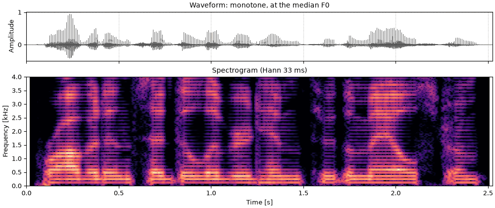
snd, contour = on(np.full_like(track.f0[0], median))
fig, playhead = show(snd, "monotone, at the median F0", contour)
sound = sndUp a fifth: every F0 times 1.5. Unlike the phase vocoder's shift up a fifth, which moves the formants with the harmonics, the envelope here stays put, so the talker sounds like the same person at a higher pitch rather than like a smaller one.
hm2_up_a_fifth.flac, 2.5 s, mono
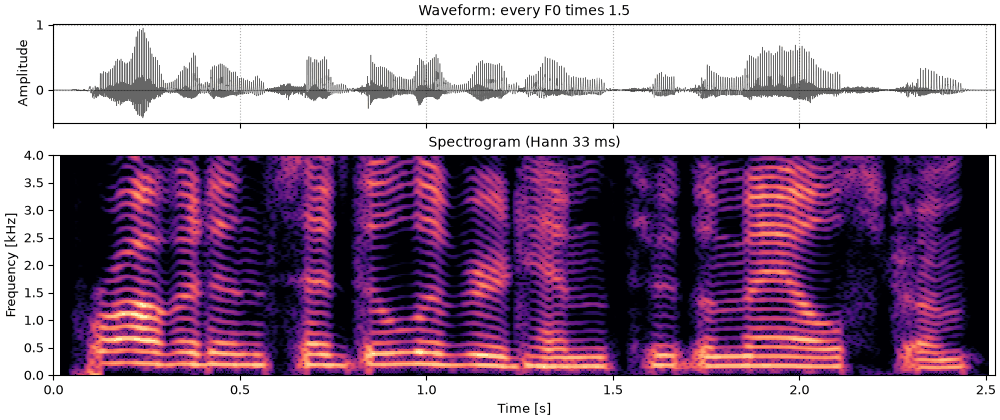
snd, contour = on(1.5 * track.f0[0])
fig, playhead = show(snd, "every F0 times 1.5", contour)
sound = sndThe contour turned upside down on a log scale around the median: where the talker rises, this falls by the same musical interval.
hm3_the_contour_flipped.flac, 2.5 s, mono
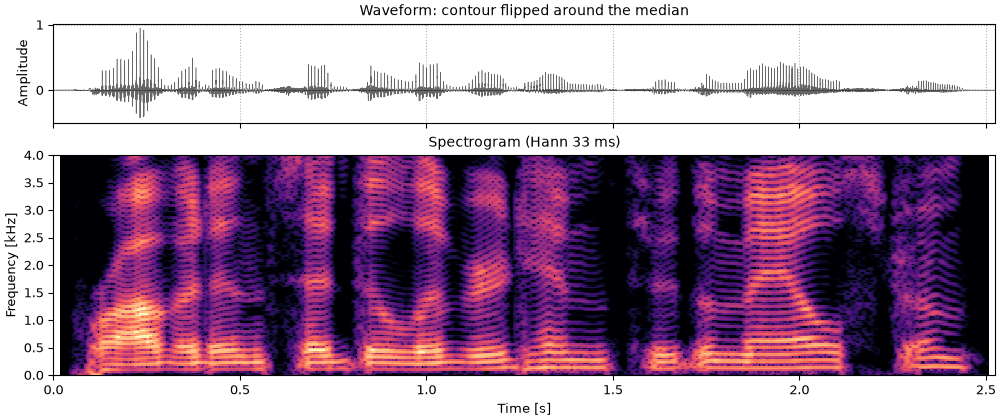
snd, contour = on(median**2 / np.where(voiced, track.f0[0], median))
fig, playhead = show(snd, "contour flipped around the median", contour)
sound = sndA whisper: no harmonics at all, the shaped noise everywhere. This is roughly the noise vocoder above, with the cepstral envelope in place of 16 band envelopes.
hm4_whispered.flac, 2.5 s, mono
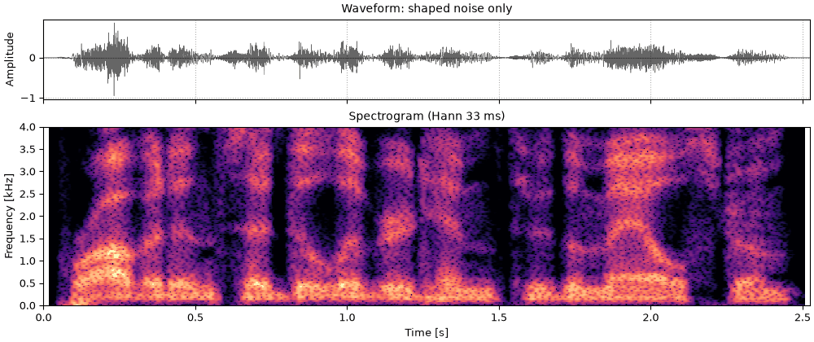
whisper = finish(so.Sound(breath, fs))
fig, playhead = show(whisper, "shaped noise only")
sound = whisperThe amplitudes fix the spectrum, but the starting phases decide the waveform. In cosine phase all the harmonics peak together once a period, giving a sharp pulse; Schroeder's phases spread the energy across the period for a nearly flat envelope (Schroeder, 1970); random phases fall in between. With a contour the phases set only where each harmonic starts. After that every harmonic runs at exactly n times the same instantaneous frequency, so the waveform keeps its shape as the pitch moves.
Thirty milliseconds of each, on equal-amplitude harmonics following so.f0_track through a
vowel. The three have the same spectrum; only the waveform differs.
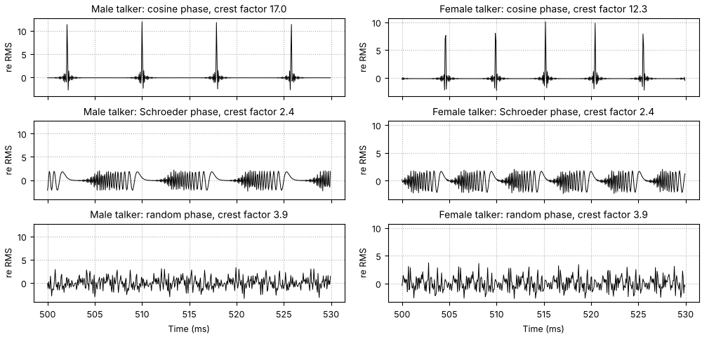
phase_sets = {"cosine": "cosine", "Schroeder": "schroeder+", "random": "random"}
buzzes = {name: so.harmonic_complex(duration, fs, track, phases=p, rng=3) for name, p in phase_sets.items()}
fig, axes = plt.subplots(3, 1, figsize=(10, 4.8), sharex=True, layout="constrained")
for ax, (name, snd) in zip(axes, buzzes.items(), strict=True):
seg = (t_samples >= 0.50) & (t_samples < 0.53)
ax.plot(t_samples[seg] * 1e3, snd.data[seg, 0], color="k", lw=0.7)
ax.set(title=f"{name} phase, crest factor {snd.peak / snd.rms:.1f}", ylabel="Amplitude")
ax.grid(ls=":")
axes[-1].set_xlabel("Time [ms]")Cosine phase: a pulse train that follows the intonation, buzzy and bright.
hf1_cosine_phase.flac, 2.5 s, mono
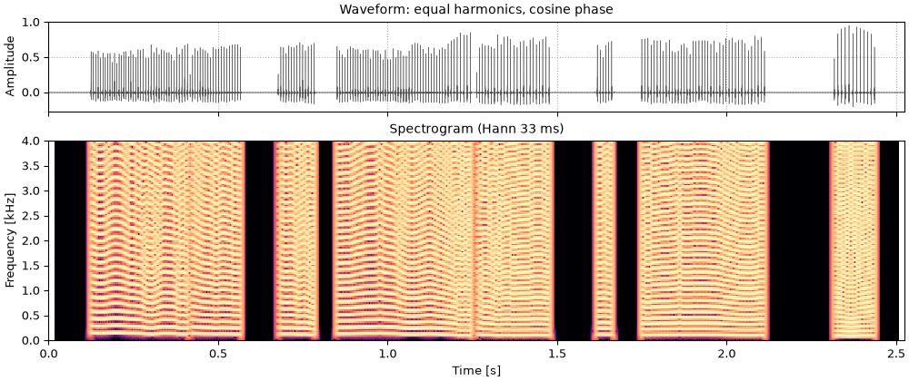
snd = finish(buzzes["cosine"])
fig, playhead = show(snd, "equal harmonics, cosine phase", contours["so.f0_track"])
sound = sndSchroeder phase: the same harmonics, softer and more even, since no instant in the period carries all the energy.
hf2_schroeder_phase.flac, 2.5 s, mono
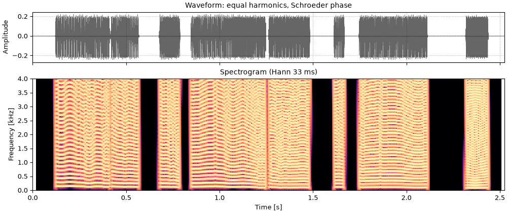
snd = finish(buzzes["Schroeder"])
fig, playhead = show(snd, "equal harmonics, Schroeder phase", contours["so.f0_track"])
sound = sndRandom phase, one draw: between the two, with a timbre that depends on the draw.
hf3_random_phase.flac, 2.5 s, mono
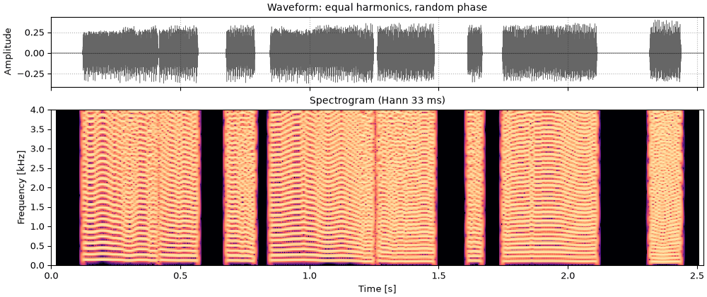
snd = finish(buzzes["random"])
fig, playhead = show(snd, "equal harmonics, random phase", contours["so.f0_track"])
sound = sndThe same recipe on the same sentence read by a female talker (CMU ARCTIC, speaker slt), whose pitch is about half as high again as the male talker's. Two things are harder. The female harmonics are further apart, so they sample the formants more sparsely, and whatever lies between them is not in the spectrum to be measured. And the lifter at half a period keeps fewer quefrencies, so the envelope it recovers is smoother. Everything else, the tracker, the noise in the gaps and its balance, is done as above. Listen for whether the female vowels come back as clearly as the male ones.
def resynthesize(snd, seed=2):
"""A pitch track and a cepstral envelope from snd, put back together as above:
harmonics on so.f0_track shaped by the envelope, and envelope-shaped noise where unvoiced."""
snd_stft = so.STFT(snd, win_dur=0.040, hop_dur=0.005)
snd_cep = so.Cepstrum(snd_stft)
snd_track = so.f0_track(snd)
is_voiced = snd_track.voiced[0]
voiced_times, voiced_f0s = snd_track.t[is_voiced], snd_track.f0[0][is_voiced]
lifter_cutoffs = 0.5 / np.exp(np.interp(snd_cep.t, voiced_times, np.log(voiced_f0s)))
snd_envelope = snd_cep.lifter(lifter_cutoffs).envelope()[0]
snd_log_envelope = RegularGridInterpolator(
(snd_cep.t, snd_stft.f), np.log(snd_envelope.T), bounds_error=False, fill_value=None
)
def snd_formants(t, f):
return np.exp(snd_log_envelope(np.stack([t, f], axis=-1)))
snd_duration = snd.duration
harmonics = so.harmonic_complex(snd_duration, fs, snd_track, amplitudes=snd_formants).data[:, 0]
noise_stft = so.STFT(so.gaussian_noise(snd_duration, fs, rng=seed), win_dur=0.040, hop_dur=0.005)
noise_stft.data = snd_envelope[None] * np.exp(1j * np.angle(noise_stft.data))
snd_breath = noise_stft.to_sound().data[: len(snd), 0]
sample_times = np.arange(len(snd)) / fs
snd_voicing = np.interp(sample_times, snd_track.t, is_voiced.astype(float))
original = snd.data[:, 0]
snd_balance = rms((1 - snd_voicing) * original) / rms(snd_voicing * original)
gap = (1 - snd_voicing) * snd_breath
out = harmonics + gap * snd_balance * rms(harmonics) / rms(gap)
return finish(so.Sound(out, fs)), (snd_track.t, snd_track.f0[0])
sentence_female = finish(so.load("docs/speech/slt_arctic_a0131.flac"))
resynthesis_female, contour_female = resynthesize(sentence_female)
f0_female = contour_female[1]
print(f"median voiced F0: {np.median(f0_female[f0_female > 0]):.0f} Hz (slt), {median:.0f} Hz (bdl)")median voiced F0: 183 Hz (slt), 119 Hz (bdl)
The female talker's sentence, for reference, with so.f0_track's contour over the narrowband spectrogram.
hv1_the_sentence_a_higher_voice.flac, 2.6 s, mono
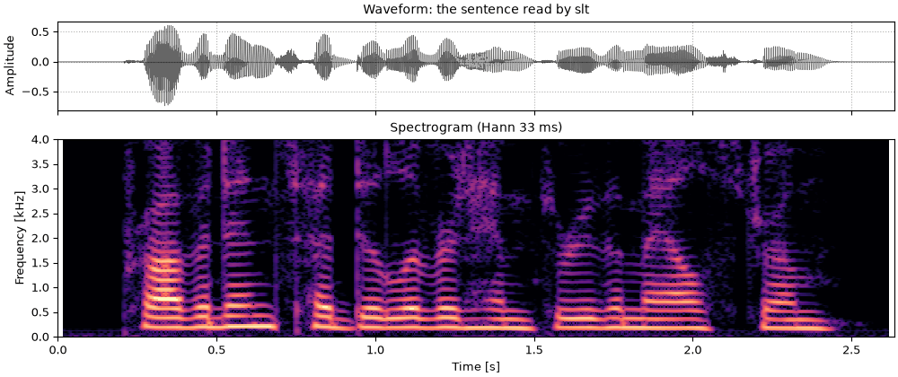
fig, playhead = show(sentence_female, "the sentence read by slt", contour_female)
for ax in playhead:
ax.set_xlim(0, sentence_female.duration)
sound = sentence_femaleThe female talker's sentence from a pitch track and a cepstral envelope, as in Shaped noise in the gaps for the male talker's. Each harmonic carries the envelope's level at its own frequency, so with the female harmonics further apart, the formants are drawn from fewer samples.
hv2_resynthesized_from_pitch_and_envelope_a_higher_voice.flac, 2.6 s, mono
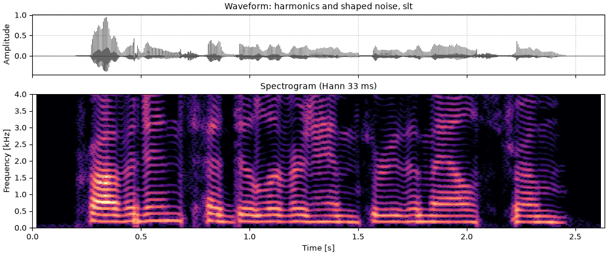
fig, playhead = show(resynthesis_female, "harmonics and shaped noise, slt", contour_female)
for ax in playhead:
ax.set_xlim(0, sentence_female.duration)
sound = resynthesis_femalef0.f0_trackgabor.TVGaborFrame.pitch_adaptivecepstrum.Cepstrum.f0generators.schroeder_complexchannel_vocoder.noise_vocode